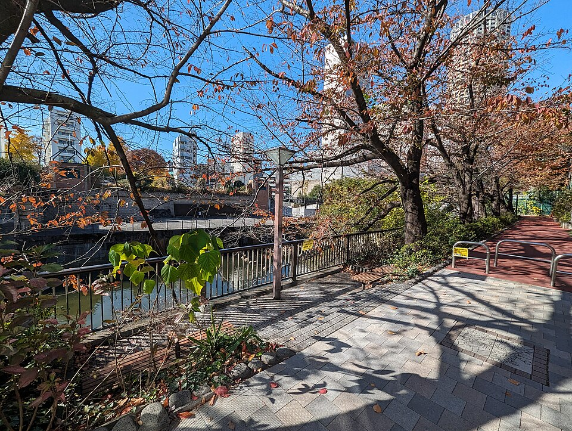
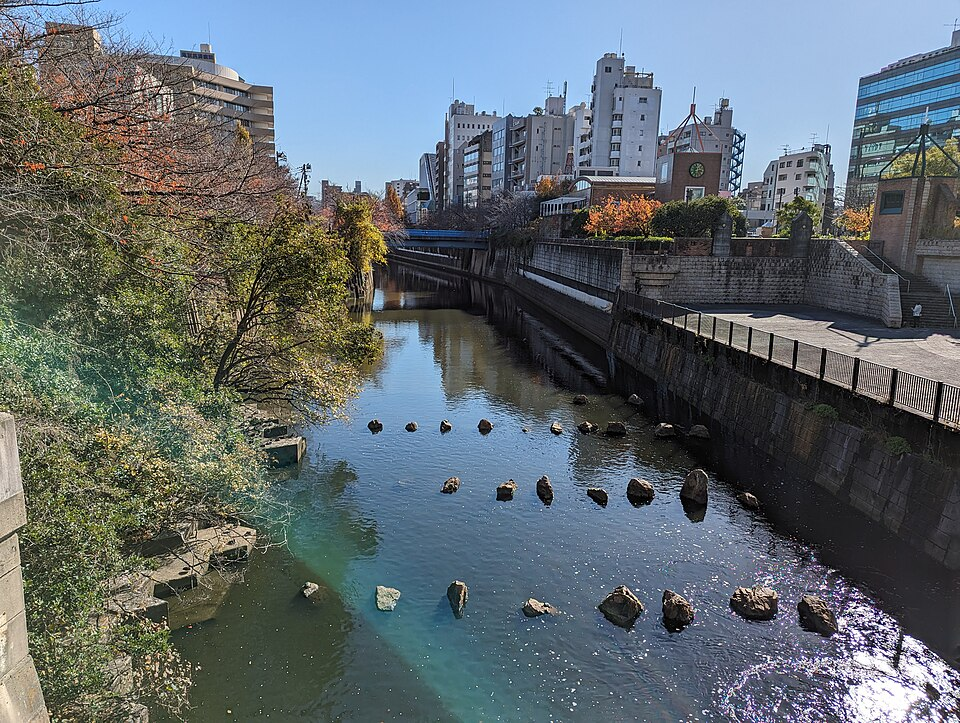
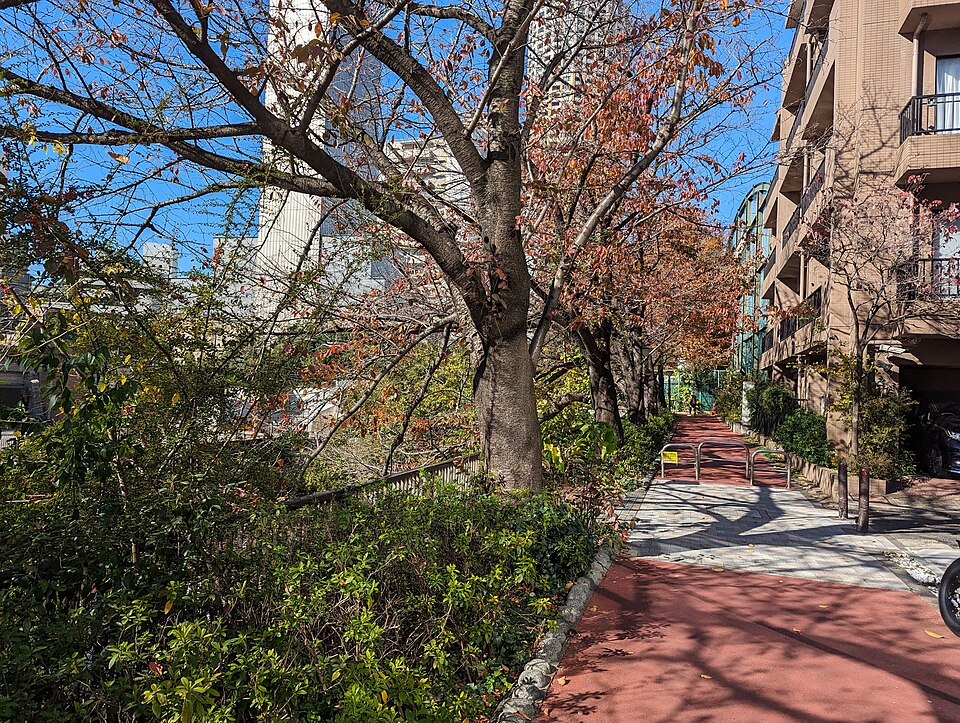

Жилой район Meguro, известный бутиками и кафе вдоль реки Meguro. Местные называют его коротко «Nakame». Весной набережная - одно из главных мест Токио для любования сакурой (hanami). Сейчас деревья зелёные, народу меньше, гулять спокойно.
Фото сделаны осенью, в ноябре. Сейчас листва ещё зелёная.